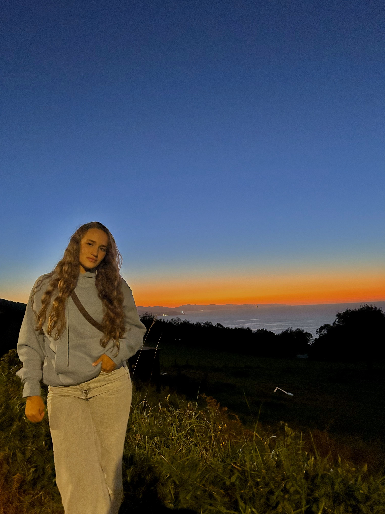

About me
¡Aquí podrás conocerme un poco mejor!
Descripción personal
Aitana Ábalos Campoy, una joven enérgica y llena de pasión por la vida. A sus 19 años, se destaca como una entusiasta del deporte. Como triatleta apasionada, pasa sus días entrenando con dedicación y determinación, desafiando constantemente sus límites y superando obstáculos en el agua, en bicicleta y en carrera.
Pero no todo se trata de competir. Aitana también disfruta del lado más relajado de la vida, encontrando felicidad en la planificación de emocionantes escapadas y planes con amigos. Desde acampadas improvisadas en la montaña hasta escapadas urbanas espontáneas, siempre está lista para una nueva aventura.
Estudios realizados
- Educación Secundaria y bachillerato en el Colegio Inglés San Patricio de San Sebastián
- Estudios universitarios en Comunicación + TCAM en la Universidad de Deusto
Gustos y aficiones
Aitana disfruta practicando triatlón en su tiempo libre y participa activamente en competiciones locales y nacionales. Desde que descubrió el mundo del triatlón, se ha convertido en una parte fundamental de su vida. Las largas sesiones de entrenamiento en la piscina, las salidas en bicicleta escénicas y las carreras emocionantes no solo la mantienen en forma, sino que también alimentan su pasión por el deporte y la superación personal.
Participar en competiciones nacionales le brinda la oportunidad de desafiarse a sí misma y medir su progreso. Aitana se emociona cada vez que se pone el traje de neopreno, ajusta su bicicleta y se prepara para la adrenalina de la competición. Su determinación y espíritu competitivo la impulsan a dar lo mejor de sí misma en cada evento, ya sea nadando en aguas abiertas, pedaleando cuesta arriba o corriendo hasta la línea de meta.
Experiencia laboral
A lo largo de su trayectoria, Aitana ha acumulado una valiosa experiencia laboral en diversas áreas:
Monitora de natación
Durante tres veranos, Aitana trabajó como monitora de natación en diferentes urbanizaciones. Su responsabilidad era enseñar y supervisar a niños y adultos en el aprendizaje de técnicas de natación, garantizando su seguridad y promoviendo un ambiente divertido y educativo en el agua.
Socorrista de piscinas
En dos veranos consecutivos, Aitana desempeñó el papel de socorrista en piscinas, donde su principal tarea era velar por la seguridad de los bañistas, ofreciendo atención de primeros auxilios en caso de emergencias y asegurando el cumplimiento de las normas de seguridad en el agua.
Sanitaria en eventos
Además, Aitana ha trabajado como sanitaria en diversos eventos, brindando asistencia médica básica y atención de emergencia a los participantes y espectadores. Su capacitación en primeros auxilios y su disposición para actuar bajo presión han sido fundamentales en la prestación de un servicio eficiente y profesional en estos entornos.
Rodajes
Aitana también ha incursionado en el mundo del cine y la producción audiovisual, participando en rodajes para diferentes lugares. Su creatividad, flexibilidad y capacidad para trabajar en equipo han sido apreciadas por los equipos de producción, contribuyendo al éxito de los proyectos cinematográficos en los que ha participado.